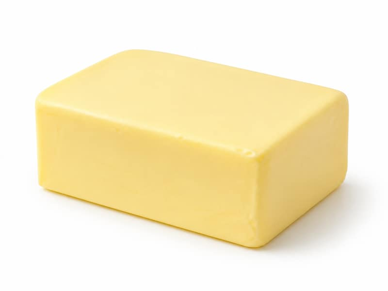

Tłuszcze i oleje
Margaryna
Margaryna to produkt z kategorii Tłuszcze i oleje. Na 100 g znajdziesz 0.5 g białka (proteinów), 717 kcal kalorii, 0.5 g węglowodanów oraz 80 g tłuszczu — idealne dane przy zdrowym odżywianiu, odchudzaniu lub budowie masy mięśniowej. Współczynnik ok. 1434.0 kcal na 1 g białka pomaga porównać gęstość odżywczą. Skład zależy od marki (palmowy vs miękki).
Kalorie717 kcalna 100 g
Białko / proteiny0.5 g
Węglowodany0.5 g
Tłuszcz80 g
Cena (szac.)~2,90 złza 100 g
Ceny zaktualizowano: maj 2026 (szacunek — ceny w popularnych supermarketach)
Porcja: łyżka (10g)
| Kalorie | 72 kcal |
|---|---|
| Białko | 0.1 g |
| Węglowodany | 0.1 g |
| Tłuszcz | 8 g |
| Cena (szac.) | ~0,29 zł |
Szczegółowe składniki odżywcze na 100 g
| Wartość energetyczna (kalorie) | 717 kcal |
|---|---|
| Białko (proteiny) | 0.5 g |
| Węglowodany | 0.5 g |
| Tłuszcz | 80 g |
| Tłuszcze nasycone | 15 g |
| Tłuszcze nienasycone | 65 g |
| Witaminy i minerały | Witamina E, Witamina A, Witamina K |
| Współczynnik kcal / 1 g białka | 1434.0 |
| Cena produktu (szac. za 100 g) | ~2,90 zł |
| Cena za 100 g białka (szac.) | ~580,00 zł |